(CIKM’21)Self-Supervised Graph Co-Training for Session-based Recommendation(COTREC)
1. 架构图
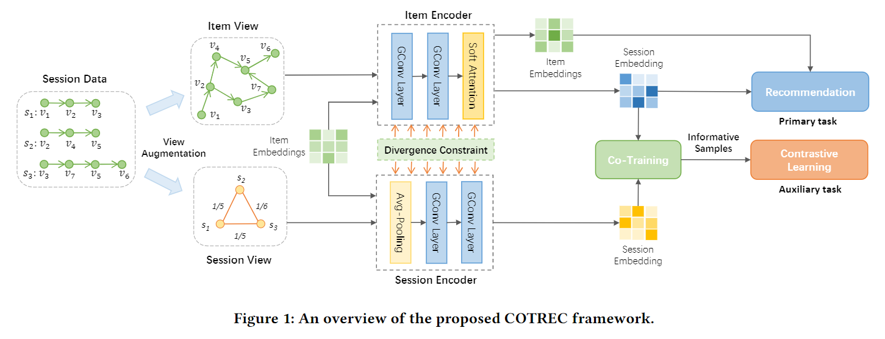
2. 本文思想概述
通过构造物品的全局图以及会话之间的连接图，来学习两个视图中的会话嵌入，最终利用 Co-Training 来为对方提供标签信息，从而进行自监督学习（具体来说利用全局图预测的下一个物品作为会话图进行自监督的正样本，反之亦然）。
3. 会话嵌入学习
3.1 全局物品图的嵌入学习

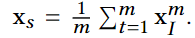
就是在全局图上面做GNN，最后对每一个会话中的物品在引入反向位置编码得到特定的会话内的物品嵌入。最后利用GCD-GNN提出的软注意力机制来得到最终的基于全局物品图的会话信息。
3.2 会话图嵌入学习
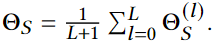
没啥好说的就是GNN
4. Co-Training 自监督学习
4.1 对比学习
利用全局物品图学到的嵌入位会话图生成正样本：
利用会话图学到的嵌入给全局物品图生成正样本（注意会话图只能利用初始物品的嵌入来预测，因为他后面学到的都是会话级别的嵌入）
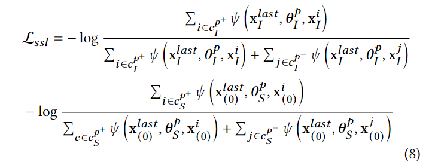
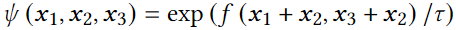
4.2 对抗训练
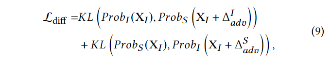
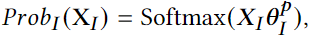
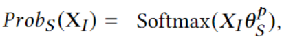
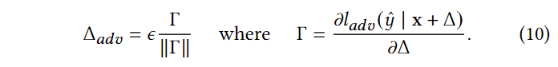
就是常规的FGSM方法，沿着梯度上升的方向扰动嵌入，不同的是这里是co-training, 算KL散度时是两个视图之间算（对另一个视图 + adv）。有点疑惑的是，对会话图算概率分布时用的是
1 | def adversarial_item(self, item_emb, tar,sess_emb): |
5. 预测（Loss)

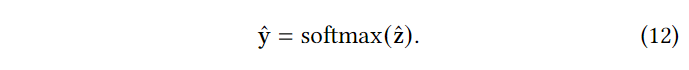
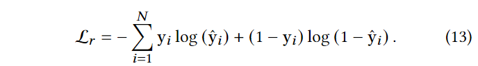
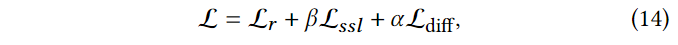
6. 实验结果